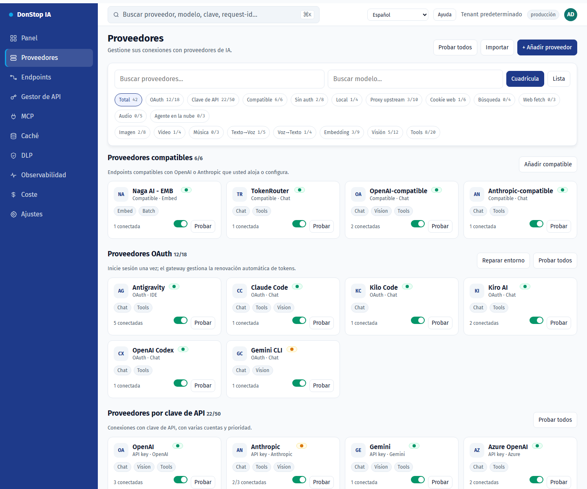

Proveedores

Qué hace
Lista proveedores de IA, cuentas, estado de conexión y modelos disponibles, con vistas de cuadrícula/lista y pruebas de conexión.
Cuándo usarla
Use esta pantalla cuando necesite inspeccionar, configurar u operar esta parte del gateway.
Paso a paso
- Abra Proveedores desde la barra lateral.
- Revise los indicadores y la tabla principal.
- Use las acciones descritas abajo; los cambios se aplican de inmediato.
- Use Cuadrícula/Lista, filtre por autenticación o capacidad y pruebe el proveedor antes de activarlo.
Campos y acciones
| Campo o acción | Etiqueta o acción visible en esta pantalla. |
|---|---|
| + Añadir proveedor | Etiqueta o acción visible en esta pantalla. |
| Cuadrícula | Etiqueta o acción visible en esta pantalla. |
| Lista | Etiqueta o acción visible en esta pantalla. |
| Probar | Etiqueta o acción visible en esta pantalla. |
| Estado | Etiqueta o acción visible en esta pantalla. |
Errores y estados comunes
- Si los datos no cargan, vuelva a intentarlo. Si persiste, revise el gateway y los proveedores.
- Si una acción está deshabilitada, confirme su rol y el ámbito del tenant.
- Los estados vacíos son normales antes de la primera solicitud; siga la llamada a la acción.
Proxy por cuenta
Configura Webshare en Red de proxy, prueba la API key y sincroniza la lista de proxies direct. En la cuenta del proveedor, elige Off, Preferred o Required; el endpoint asignado, la región y la salud aparecen en el mismo bloque. Un proxy en cuarentena o ausente usa conexión directa en Preferred y bloquea la llamada en Required.
Cuentas y pruebas
El detalle del proveedor mantiene el resumen consolidado y añade un resumen por cuenta con estado activo, salud, modelos disponibles/utilizables y capacidades. Usa el selector Cuenta de prueba sobre la lista de modelos para elegir en qué cuenta se prueba el modelo. Solo se pueden elegir cuentas activas con modelos utilizables, se recuerda la última elección válida y el resultado siempre indica la cuenta usada. Cada cuenta tiene su propio botón de prueba; el fallo de una cuenta no afecta a las demás.
Guías relacionadas
Captura de pantalla de Proveedores en Español.